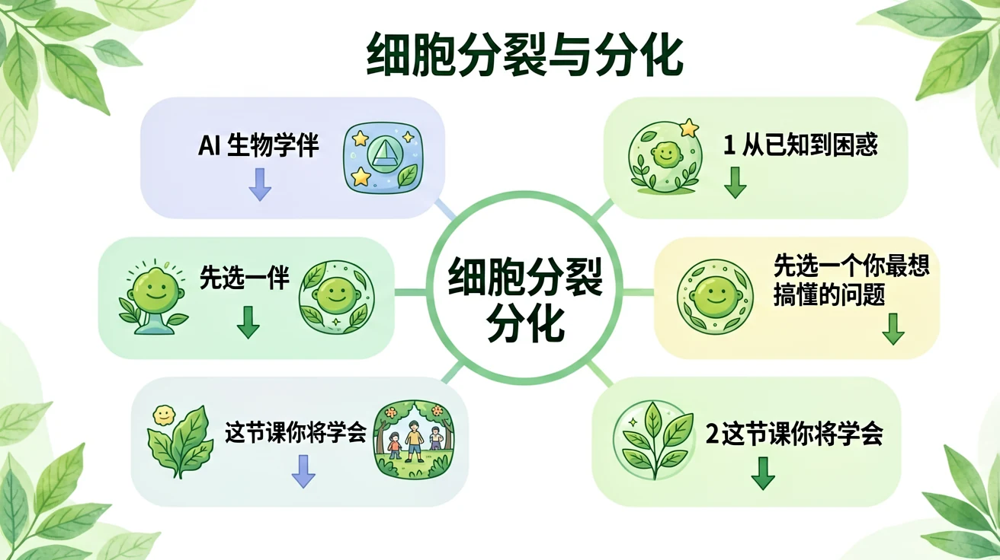
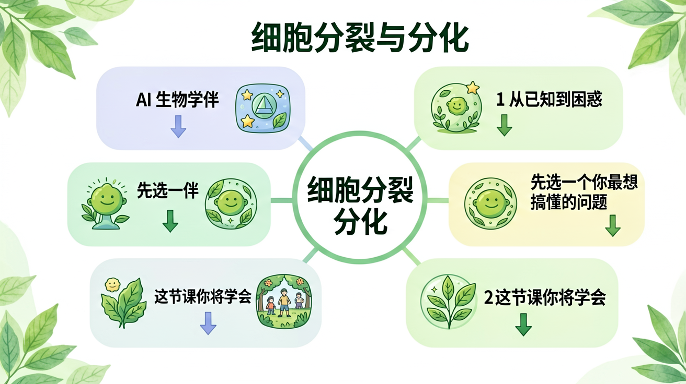

初一 · 生物 · 新概念从受精卵到 37 万亿个细胞——揭秘细胞分裂与分化的奥秘
我是你的生物小助手。这节课的关键：分裂让细胞数目增多，分化让细胞种类增多。遇到不懂随时问我！

一个人体细胞有 46 条染色体。这个细胞分裂一次后，两个新细胞各有多少条染色体？
细胞分裂就像"复印+裁纸"——先把遗传信息完整复印一份，再从中间一刀剪开，变成两个内容一模一样的新细胞。
分裂前，细胞核中的DNA（遗传信息）完整复制一份。46条染色体 → 92条染色体（成对排列）。
类比：考试前复印一套答案，这样两个人都能有完整的一套。
复制好的染色体在细胞中央排成一排，然后被纺锤丝拉向细胞两端，各分一半（92÷2=46）。
类比：拔河——纺锤丝像绳子，把染色体往两边拉。
点击"下一阶段"按钮，观察细胞从间期→前期→中期→后期→末期的完整变化。注意观察染色体的行为！
分裂让细胞数目增多了，但全是"复制品"——要形成复杂的人体，还需要分化：在发育过程中，细胞在形态、结构和功能上发生稳定性差异的过程。
目标：增加数目
结果：子细胞与母细胞完全相同
类比：复印机——印出来的每张都一样
目标：增加种类
结果：细胞形态、结构、功能发生改变
类比：同一班学生毕业后从事不同职业
细胞排列紧密，保护和分泌。如：皮肤表皮、小肠内壁。
细胞间隙大，有支持、连接、保护、营养功能。如：血液、骨、软骨。
由肌细胞构成，能收缩和舒张。如：骨骼肌、心肌、平滑肌。
由神经细胞构成，能产生和传导兴奋。如：脑、脊髓中的神经元。
细胞 → 组织 → 器官 → 系统 → 个体
（植物体没有"系统"层次：细胞→组织→器官→植物体）
人体从受精卵发育成个体的正确层次顺序是？
伤口愈合时，皮肤细胞大量增多来填补缺口。这主要依靠的是——
癌症的本质是细胞不受控制地分裂。下列理解正确的是？
📖 生物圈——细胞组成了个体，那无数个体又组成了什么？从一片草地到整个地球，生物圈是怎样运转的？
细胞分裂是生物体生长和繁殖的基础过程，指一个母细胞分裂成两个或多个子细胞的现象。例如，人体伤口愈合时，周围健康细胞会通过分裂填补受损区域。细胞分裂主要分为有丝分裂和无丝分裂两种类型。有丝分裂常见于高等生物体细胞增殖，如人类皮肤细胞每28天更新一次；而无丝分裂多见于原核生物，如细菌通过二分裂快速繁殖。理解细胞分裂的关键在于掌握其周期性特征：间期（G1、S、G2期）完成DNA复制和物质准备，分裂期（M期）实现染色体均等分配。
有丝分裂包含前期、中期、后期和末期四个阶段，整个过程约需1-2小时。前期时染色质螺旋化形成可见染色体，核膜开始解体；中期所有染色体整齐排列在赤道板上，此时最适合进行核型分析；后期姐妹染色单体在纺锤丝牵引下向两极移动，确保遗传物质均等分配；末期子细胞核重新形成。以洋葱根尖细胞为例，实验观察可见不同分裂阶段的细胞：前期细胞核膨大，中期染色体排列成线，后期出现"V"形染色体移动，末期形成两个新细胞核。此过程通过严格的调控机制保证遗传稳定性，任何环节出错都可能导致疾病，如癌症就是细胞分裂失控的结果。
减数分裂是生殖细胞特有的分裂方式，包含两次连续分裂但DNA只复制一次，最终形成染色体减半的配子。以人类为例，精原细胞（46条染色体）经过减数分裂产生精子（23条染色体），与同样减半的卵细胞结合后恢复物种固有染色体数。这个过程包含同源染色体配对、交叉互换等独特现象，如在显微镜下可见减数第一次分裂前期出现的联会复合体。减数分裂的生物学意义在于：维持物种染色体数稳定（如人类世代保持46条）、增加遗传多样性（通过非同源染色体自由组合和交叉互换）。生活中，唐氏综合征等染色体病就是减数分裂异常导致的。
细胞分化指受精卵经分裂产生的细胞在形态、结构和功能上发生稳定性差异的过程。例如，同一个受精卵最终可分化出神经细胞（具长突触传导信号）、红细胞（双凹圆盘状运输氧气）、肌细胞（含肌原纤维可收缩）等200多种人体细胞。分化的本质是基因选择性表达，所有细胞含全套遗传信息但只激活特定基因。实验证明：将乳腺细胞核移植到去核卵细胞中可发育成完整个体（克隆羊多莉），说明分化细胞仍具全能性。理解分化要抓住三个要点：持久性（通常不可逆）、渐进性（经前体细胞阶段）、适应性（如高原居民红细胞分化增多以适应低氧）。
干细胞是具有自我更新和分化潜能的特殊细胞，按分化能力分为全能（如受精卵）、多能（胚胎干细胞）和专能（成体干细胞）三类。脐带血干细胞移植治疗白血病就是利用其分化造血细胞的能力；而皮肤基底层的干细胞不断分化补充表层脱落细胞。细胞全能性指单个细胞发育成完整个体的潜力，植物细胞普遍保持全能性（如柳树枝条扦插成活），而动物细胞随分化逐渐受限。最新研究发现通过特定转录因子（如Oct4）可将成体细胞重编程为诱导多能干细胞（iPS细胞），这项技术为再生医学带来革命，如用患者自身iPS细胞治疗帕金森病可避免免疫排斥。
细胞周期受多种蛋白质精密调控，核心是周期蛋白（Cyclin）与周期蛋白依赖性激酶（CDK）形成的复合物。如G1期CyclinD-CDK4促进细胞通过限制点；DNA损伤时p53蛋白可阻止周期进展进行修复，若修复失败则启动凋亡。分化调控涉及信号通路（如TGF-β通路调控胚胎发育）、表观遗传修饰（如DNA甲基化沉默基因）和微环境（干细胞巢的物理化学信号）。典型案例是维生素A酸通过激活特定基因使干细胞向神经细胞分化；而癌症本质是调控失常——原癌基因（如Ras）突变导致持续分裂，抑癌基因（如p53）失效无法阻止异常细胞。理解这些机制对研发抗癌药物（如CDK抑制剂）至关重要。
在农业上，利用植物细胞全能性通过组织培养快速繁殖名贵花卉（如兰花）或脱毒苗（如马铃薯）；动物克隆技术（如克隆牛）可保留优良性状。医学领域，造血干细胞移植治疗白血病、角膜干细胞修复眼表损伤已成熟应用；CAR-T细胞疗法是通过改造患者T细胞特异性杀伤肿瘤。科研中常用Hela细胞（来自1951年宫颈癌患者）研究细胞行为，但其污染性也警示规范操作的重要性。最新突破是用干细胞培育类器官（如迷你肾）进行药物测试，避免直接人体实验的风险。这些应用都建立在深刻理解细胞分裂与分化规律的基础上，同时需遵循伦理规范（如禁止生殖性克隆人）。
蝌蚪尾巴退化涉及细胞凋亡——溶酶体有序分解自身结构，与坏死不同不引发炎症；伤口愈合时既有细胞分裂（上皮细胞增殖）也有分化（成纤维细胞转产胶原蛋白）。植物年轮形成是季节性的分裂分化结果：春夏季形成大导管薄壁的早材，秋季产生小导管厚壁的晚材。癌细胞转移是分化异常的表现——上皮细胞获得间质细胞迁移能力（上皮-间质转化）。有趣现象如斑马鱼心肌细胞可去分化再分裂修复心脏，而人类心肌细胞出生后基本停止分裂，这解释了为什么心脏病发作常导致永久损伤。这些实例生动展示了细胞行为如何决定宏观生命现象。
1. 你观察过伤口愈合的过程吗？思考新细胞从哪里来？2. 双胞胎为什么长得像？这与细胞分裂有什么关系？3. 为什么说剪下的绿萝枝条插水里能生根是神奇的现象？
1. 比较有丝分裂与减数分裂的主要区别（至少两点）。2. 举例说明细胞分化在人体中的表现。3. 若某药物能阻断CDK活性，预测它对细胞周期的影响。
常见误区1：认为细胞分裂后子细胞体积与母细胞相同（错因：忽略生长间期）。诊断：通过计算演示（母细胞分裂为两个1/2体积子细胞，经生长恢复原大小）。误区2：混淆分化与分裂概念（如说"细胞先分裂再分化"）。诊断：用流程图展示分裂增加数量、分化改变类型的本质区别。
设计探究实验：比较不同植物（如绿豆、洋葱）根尖细胞分裂频率。要求：1. 列出实验步骤；2. 预测可能结果并分析原因；3. 讨论温度对分裂速率的影响如何验证。提示：可用显微镜观察统计分裂相细胞占比。
先独立作答，再点选项查看对错与错因。
细胞分裂的主要目的是什么？
细胞分化的主要结果是什么？
在植物生长过程中，细胞分裂主要发生在哪个部位？
细胞分裂过程中，____复制并分配到两个新细胞中。
答案：遗传物质
在细胞分裂过程中，遗传物质（DNA）复制并分配到两个新细胞中，确保每个新细胞都具有相同的遗传信息。
细胞分化后，细胞会形成不同的____，以执行特定的功能。
答案：组织
细胞分化后，细胞会形成不同的组织，如叶肉组织、韧皮部等，以执行特定的生理功能。
下列关于细胞分裂和分化的描述，正确的是哪一项？
设计一个实验，观察植物茎尖细胞的细胞分裂和分化过程。